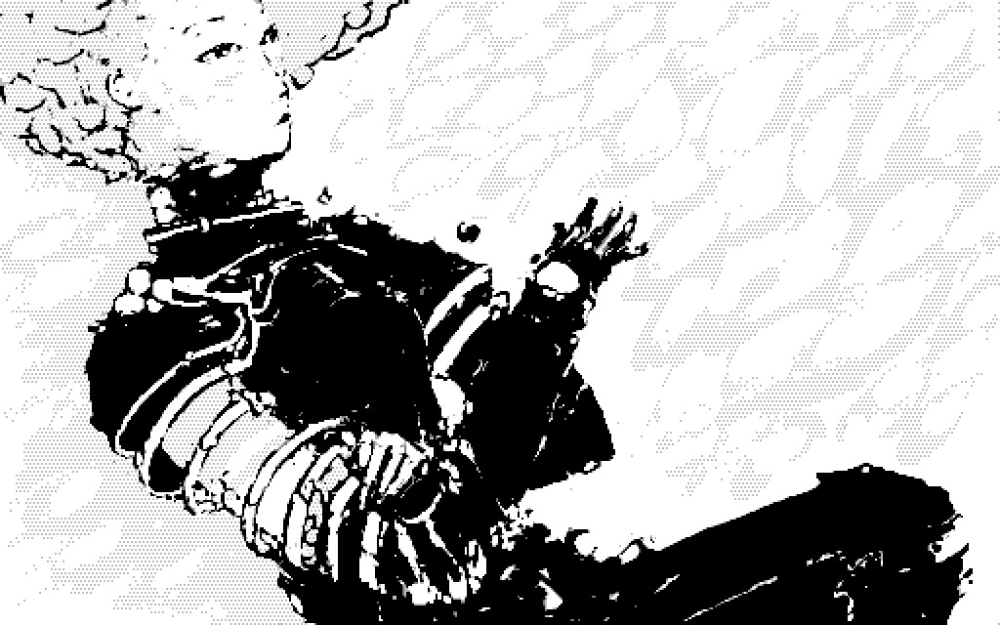
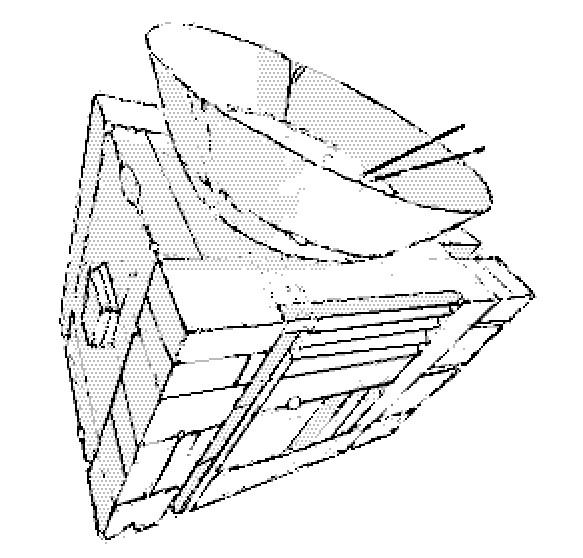
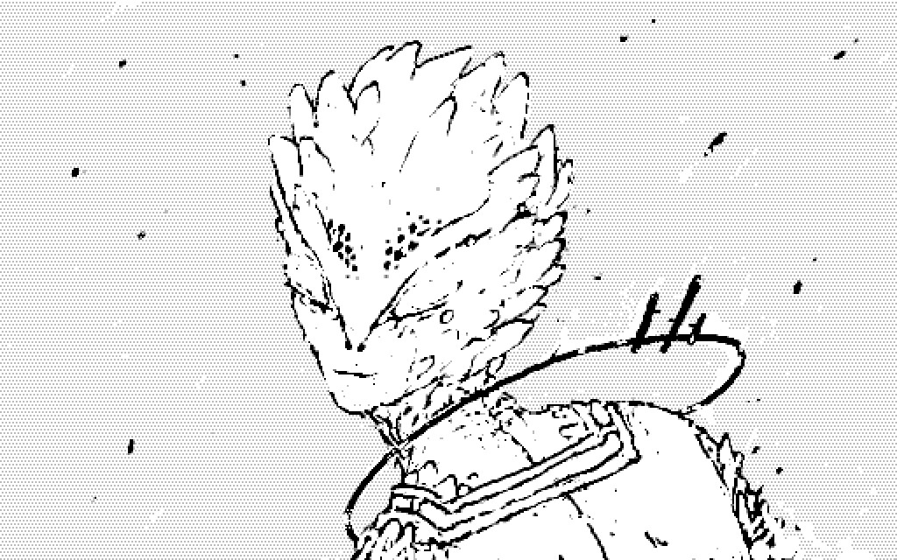
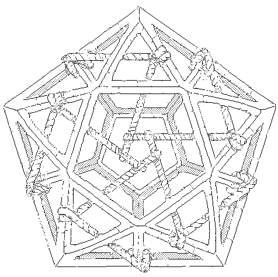
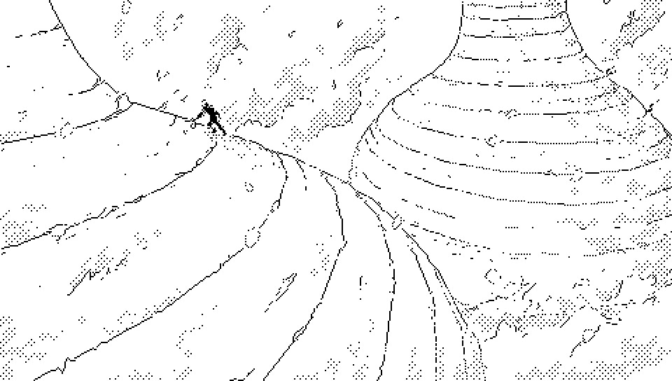
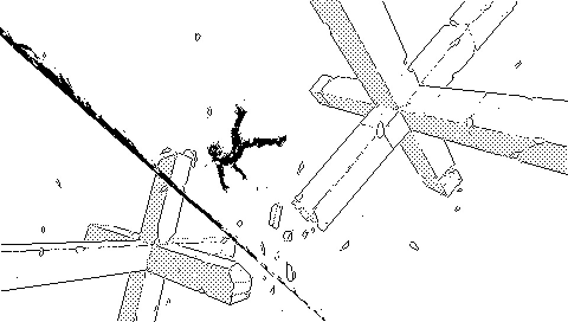
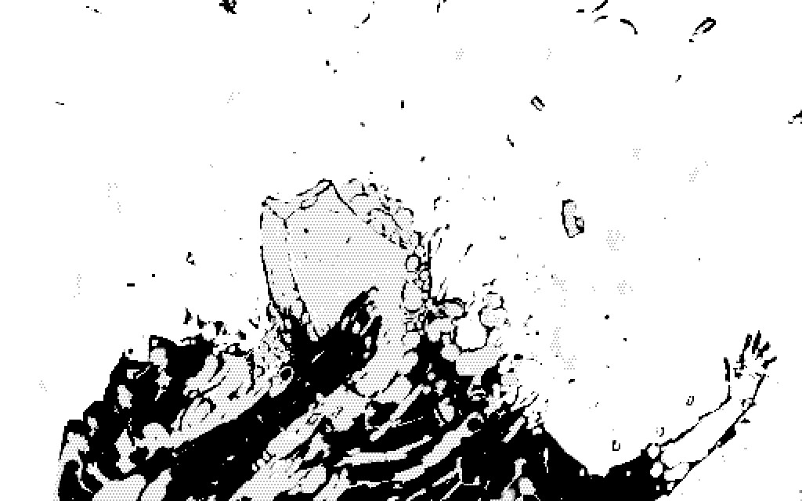

Characters are a selection of residents of Dinaisth at the end of times.
The Neauismetica follows the handful of individuals who came to Dinaisth to challenge the Ehrivevnv dimensional puzzle, or complete the work of the Neon Hermetists.

Neonev is a daughter of Rlionn.
During the first season, Neonev crossed Kanikule, and survived, . While most of Rlionn's Children do not stray too far from the Oasis, one of them has left the desert of Laeisth to travel Dinaisth.
They're the only immortal wandering the structure who must eat to make the energy needed to move, the food converter can turn matter into meals, heat up and purify liquids. It can also develop film.

The armor was designed to weather the storm and protect against flying debris, the sleeves can be removed.

Andes came through a Soies Injection shortly before the first season.
Andes was already present on Dinaisth when Neonev arrived from across Kanikule, the role of Andes in the collapse of Yajnev is unknown, but their arrival coincides with the destruction of Vetetrandes.
Prior the arrival of Andes, a massive office manifested in Laeisth, known as the Andes castel, suggesting an external manipulation of the Soies. Andes also brought through the injection, the tools required to study the Ehrivevnv.

The Rope Of Andes is a knots computer that allowed Andes to cross the threshold of the Occurring without getting caught. Numerous sculptures occupied the otherwise empty rooms the castel, one of the sculpture, the Known Magye, is a skeletal prism bound by a rope connecting some of its vertices at its center in the shape of a pentagon.

Rlionn periodically manifests in Laeisth.
Rlionn is not a single individual but a trait that manifests itself in the travelers who wander near the Oasis of Laeisth. It is experienced as a trance driving its host to embark on a walk across the desert toward Paradichlorisse. During these walks in which one becomes a vessel for Rlionn to physically interact with the world, the afflicted has momentary control over the dream world from which Rlionn originates.
Spoken-of in tales and songs, the stories of Rlionn and the procession of its subjects are sung in the album Children Of Bramble. Rlionn's reach doesn't extend beyond the shores of the Laeisth continent, and so Rlionn never effectively reach its destination, it only leaves stranded and confused sleepwalkers in the wastes.

Paradichlorisse looks like a ribbon.
Living deep beneath the surface of the Es plains, snaking through and across Dinaisth, Paradichlorisse's ribbon-like body is reflecting moments from anywhere within the Occurring, in such details that the fractal appears, to the observer, in higher definition than presence, or living, itself. Its existence is collapsed to pure indexicality.
When Paradichlorisse spoke of silence, silence fell.
A lesser impression of seeing or hearing Paradichlorisse would be akin to picking up a book, and in vivid details, before your eyes is the story of your own picking up of that book, and the narration of the confusion that ensued.
An unfortunate mortal glancing at Paradichlorisse, would immediately collapse, unable to pull away. The narration of the current moment would feel more real than existence itself and ensnare them in a vision from which they would not be able find their way back out of the story of their death.
It is because I cannot see what you see that I can see at all.

The death of Yajnev engulfed Vetetrandes in an opaque impenetrable lock.
Yajnev was an actor who's nervous system spanned all locally occurring events, steering the course of Time. Approaching Yajnev would effectively vaporize and assimilate anything and anyone into the tendrils of its thoughts.
The space surrounding the corpse of Yajnev is still haunted by echoes of its processing the event. The effect of Andes forcing its way into Dinaisth has caused the collapse by forcing a new event into the Soies.
incoming: neauismetica